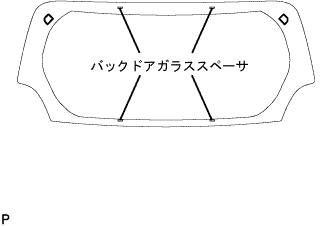
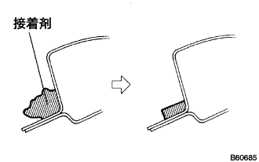
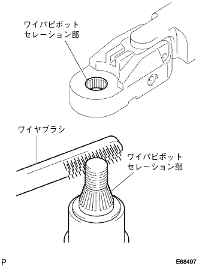

バックドア ガラス 取り付け |
| 1. バックドア ガラス清掃 |
クリップおよびスペーサを取りはずす。(ガラス再使用時)
スクレーパーなどを使用して、残った接着剤およびアウトサイドモールデイングを削り取る。(ガラス再使用時)
ガラス外周を白ガソリンで清掃する。
| 2. バツクドアウインドウアウトサイドモールデイング取り付け |
アウトサイドモールデイング取り付け部に専用プライマーを塗布する。
図の位置にバツクドアウインドウアウトサイドモールデイングを取り付ける。
| 3. バックドアガラス スペーサ取り付け |
スペーサ取り付け部に専用プライマーを塗布する。
|  |
図の位置にバックドアガラススペーサを取り付ける。
| 4. バックドア ガラス取り付け |
ボデー取り付け面清掃
|  |
車両側の接着剤に著しく凹凸がある場合は、ナイフで平滑にする。
ガラス取り付け前作業
吸引ゴムをガラスに張り付ける。
ガラスをボデーに載せ、ガラス全周の幅が均一(ボデーとガラス端面の隙間が均一)になる位置にセットする。
ガラスとボデーパネル部にガムテープを貼り、ペンで合わせマークを付ける。(新品時)
ガラスを取りはずす。
車両側のボデー面が露出している（接着剤が残っていない）部分に専用プライマーを塗布する。
破損したクリップの位置にブチルテープを貼り付ける。(ガラス再使用でクリップ破損の場合)
シーラントガンに接着剤をセットする。
接着剤を図のようにビード状に塗布する。
ガラス取り付け
吸引ゴムを使用し、合わせマークを一致させてガラスを取り付ける。
ガラス前面を軽く押して、完全に密着させる。
接着剤のはみ出し、不足をヘラで修正する。
接着剤が硬化するまで保護テープでガラスを押さえておく。
余分な接着剤は、硬化する前に取り除く。
| 5. バックウインドウガラス チャンネル RH取り付け |
ボデー側取り付け面にプライマーを塗布する。
クリップ2個のかん合を合わせ、バックウインドウ ガラス チャンネル RHを取り付ける。
| 6. バックウインドウガラス チャンネル LH取り付け |
RH側はLHと同様の手順で行う。
| 7. 水漏れ点検および補修 |
接着硬化後、車両外側から水をかけ、室内に水漏れのないことを確認する。
水漏れが生じた場合は、乾燥させた後スリーセメントブラックを充てんする。
| 8. リヤワイパ アームASSY取り付け |
|  |
リヤワイパピボットセレーション部をワイヤブラシで清掃する。
リヤワイパアームセレーション部を丸やすり等で清掃する。(再組み付け時)
 |
リヤワイパモータASSYを自動停止位置に停止させ、ナットでリヤワイパアームASSYを図の様に取り付ける。
水またはウォッシャ液をガラスにかけながらリヤワイパを作動させ、ブレードの拭払状態およびボデーと干渉しないことを確認する。
| 9. リヤワイパ アーム ヘッドキャップ取り付け |
| 10. センタストップランプASSY取り付け |
コネクタをセンタストップランプASSYに接続する。
センタストップランプASSY B部のツメのかん合2箇所をセンタストップランプブラケットにはめ込む。
 |
センタストップランプASSYを①の方向に回転し、センタストップランプASSYをセンタストップランプブラケットに取り付ける。
クランプで、センタストップランプASSYのハーネスをセンタストップランプブラケットに取り付ける。
| 11. センタストップランプ カバー取り付け |
 |
センタストップランプカバーを①の方向に押し、クリップのかん合2箇所を取り付ける。
センタストップランプカバーを②の方向に押し、A部のツメのかん合2箇所でセンタストップランプカバーを取り付ける。
| 12. バックドアトリム ボード取り付け |
 |
クリップ9箇所をかん合させ、バツクドアトリムボードを取り付ける。